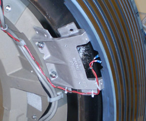
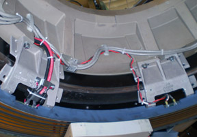
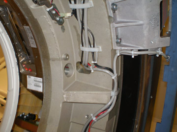

Illustration 9: Slip Ring Harnessing Transmitter connections

Do NOT pull cables tight around corners of the casting or mounting brackets. This may cause a short due to wear later.
There is a threaded hole in the casting behind the collimator. This is for the gantry balance trial weight. Make sure cable routing allows the trial weight to still be installed if needed at a later date.
Torque connections to the following:
Table 6: Slipring connection torque
| 4 N-m | 3 lb-ft | 35 lb-in | 41 kg-cm |
Illustration 8: Slip Ring Harnessing AC Power

Illustration 9: Slip Ring Harnessing Transmitter connections
Illustration 10: Slip Ring Harnessing AC and HV connections

Illustration 11: Slip Ring Harnessing Signal PCB connection
